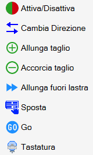
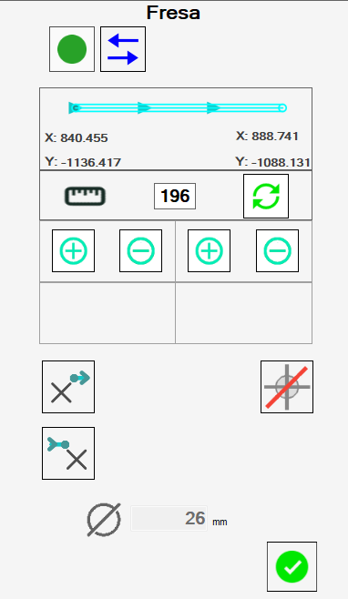
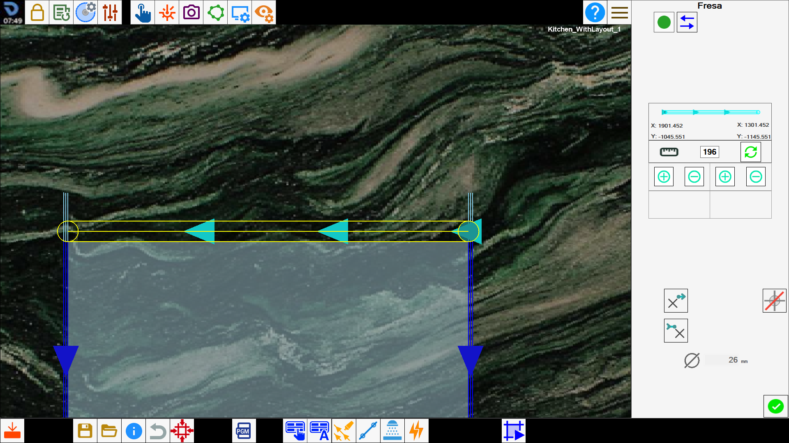
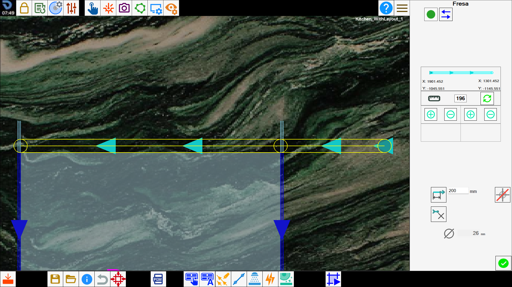
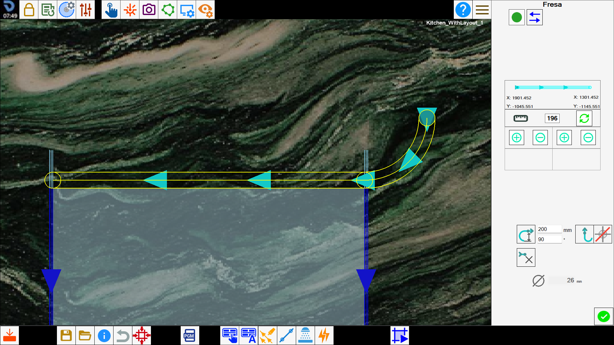

Questo pannello permette all’operatore di modificare alcune caratteristiche di un taglio.

Pulsanti
Nell’angolo in alto a sinistra, è possibile modificare l’attivazione del taglio.
 | Attiva/Disattiva taglio |
In base alla tipologia del taglio selezionato, verranno visualizzate versioni diverse di questo pannello.
Tagli con disco
Selezionando un taglio eseguito con disco, lineare o ad arco, viene visualizzato il seguente pannello:

I tagli eseguiti con disco sono caratterizzati da un punto iniziale ed un punto finale. Le frecce ne definiscono il verso di percorrenza, da inizio a fine.

Sulla tabella riportata sotto, vengono riportati i pulsanti con cui l’operatore può modificare le caratteristiche del taglio:
 | Inverti verso del taglio |
 | Quantità di allungo |
 | Calcola scodo |
 | Allunga taglio |
 | Accorcia taglio |
 | Allunga estremo iniziale fino a bordo lastra |
 | Allunga estremo finale fino a bordo lastra |
 | Allunga tagli corti |
Vengono inoltre visualizzati alcuni dati relativi all’esecuzione del taglio.
 | Affondo |
 | Velocità percentuale |
 | Inclinazione |
Modificare il taglio dall’area di lavoro
Selezionando un taglio sull’area di lavoro e premendo il pulsante destro del mouse, appare un menu per poter modificare il taglio rapidamente. I pulsanti corrispondono alle funzioni già illustrate nella barra laterale destra e inferiore della schermata.

Tagli su archi interni
Per tagli su archi aventi curvatura rivolta verso l’interno del pezzo, è necessario tenere in considerazione che lo scodo del disco durante la lavorazione potrebbe rovinare il lato.
Per questo motivo, questi tagli devono essere svolti in modo diverso rispetto a quelli per tagli esterni.

Parametrix propone due modalità per tagliare archi interni, selezionabili con il pulsante che si trova in alto a destra.
 | Arco inclinato |
 | Arco sfasato |
Di default Parametrix consiglia di impostare la lavorazione di questi tagli con la modalità “arco inclinato“.
Se non è desiderata, è necessario cambiare la modalità di esecuzione di ogni taglio singolarmente.
Ogni modalità di lavorazione possiede pregi e difetti:
Archi inclinati consentono una finitura migliore sul risultato finale, che quindi necessiterà meno lavoro di manodopera per venire completato.
Tuttavia richiedono uno sforzo maggiore da parte della macchina, e quindi la lavorazione deve essere svolta a velocità ridotte e con più passate.Archi sfasati sono meno onerosi per quanto riguarda la fatica che la macchina deve svolgere per la loro lavorazione, e quindi possono essere svolti a velocità più elevate.
In compenso, lo scodo del disco provoca danni maggiori al materiale, e inoltre il materiale che deve essere asportato in fase di rifinitura manuale è maggiore.
Fresature
Le fresature consentono un minor numero di modifiche da parte dell’operatore.

Sono disponibili funzioni relative a:
 | Diametro utensile |
Foro aggiuntivo | |
Modifica entrata fresatura | |
Modifica uscita fresatura |
Modifica fresatura
La funzione modifica fresatura è composta da più modalità :
Fresatura classica | |
Curvatura del taglio | |
Estendi taglio |
Fresatura classica
La modalità fresatura classica non applica alcuna operazione aggiuntiva alla fresatura.

Estendi taglio
La modalità estendi taglio aumenta la lunghezza della fresatura secondo il parametro posizionato alla sua destra verso l’entrata o l’uscita in base a quale modifica si ha selezionato.

Curvatura taglio fresatura
La modalità curva taglio offre a sua volta due opzioni possiamo vederle nell’immagine :

Quando si attiva la curvatura del taglio, accanto al relativo pulsante vengono visualizzati due parametri. Il primo definisce il diametro, ovvero la distanza massima che la curvatura può raggiungere rispetto all’entrata o all’uscita della fresatura. Il secondo indica l’ampiezza dell’angolo da ottenere. Sono disponibili quattro tipi di curvatura: due per la modifica dell’entrata della fresatura e due per la modifica dell’uscita. La tabella seguente li riepiloga suddividendoli per direzione:
Curvatura a destra | |
Curvatura a sinistra |
Ribassi e Fori su vertice
I fori ad angolo e i ribassi sono lavorazioni composte rispettivamente da più fori e fresature. Nel caso in cui venga selezionata una di queste voci, viene mostrato un elenco di tutti i tagli che li compongono.

L’operatore può decidere di attivare o disattivare ciascun taglio singolarmente utilizzando il pulsante su ogni voce dell’elenco, oppure se andare ad agire contemporaneamente su tutti i tagli della lavorazione lavorazione con il pulsante in alto.
I pulsanti che appaiono sotto l’elenco permettono di modificare l’ordine con cui i singoli tagli vengono eseguiti.
 | Spostamento con frecce |
 | Spostamento alla posizione desiderata |
Inoltre, l’operatore può modificare la penetrazione della lavorazione attraverso il campo sottostante:
 | Affondo |